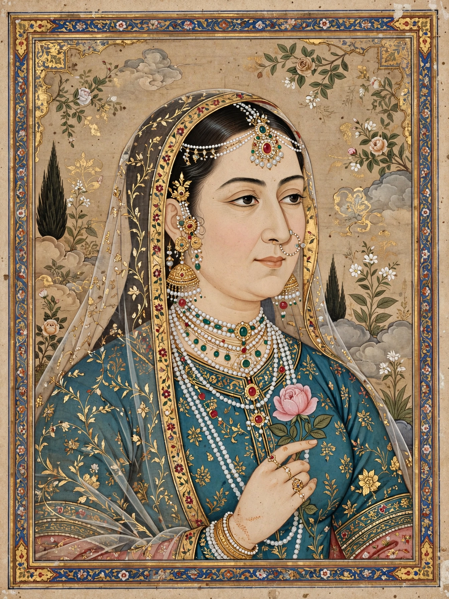

| Nur Jahan | |
|---|---|
| Born | Mehr-un-Nissa, 31 May 1577, Kandahar |
| Died | 18 December 1645, Lahore |
| Spouse | Sher Afgan Khan (m. 1594; d. 1607); Jahangir (m. 1611; d. 1627) |
| Father | Mirza Ghiyas Beg |
Nur Jahan (born Mehr-un-Nissa; 1577–1645) was the twentieth and last wife of the Mughal emperor Jahangir and, in effect, co-sovereign of the Mughal Empire. She is regarded as one of the most powerful women in Indian history: she issued imperial decrees in her own name, had coins struck bearing her name alongside the emperor's, and directed court politics for much of Jahangir's later reign.
Mehr-un-Nissa was born in Kandahar to Persian parents, Mirza Ghiyas Beg and Asmat Begam, who had emigrated to India seeking fortune at the court of Akbar. Her father rose to high office, receiving the title Itimad-ud-Daulah. In 1594 she married Sher Afgan Khan, a Persian officer; after his death in 1607 she entered the imperial household as a lady-in-waiting.
Jahangir married her in 1611 and bestowed the title Nur Jahan, "Light of the World." She formed a political junta with her father, her brother Asaf Khan, and Prince Khurram (the future Shah Jahan), dominated imperial administration, patronized architecture and trade, and designed buildings including her father's tomb at Agra, a precursor of the Taj Mahal style. After Jahangir's death in 1627 her candidate for the throne was defeated by Shah Jahan, and she retired to Lahore, where she died in 1645.
See also: Jahangir, Mughal Empire, Shah Jahan.